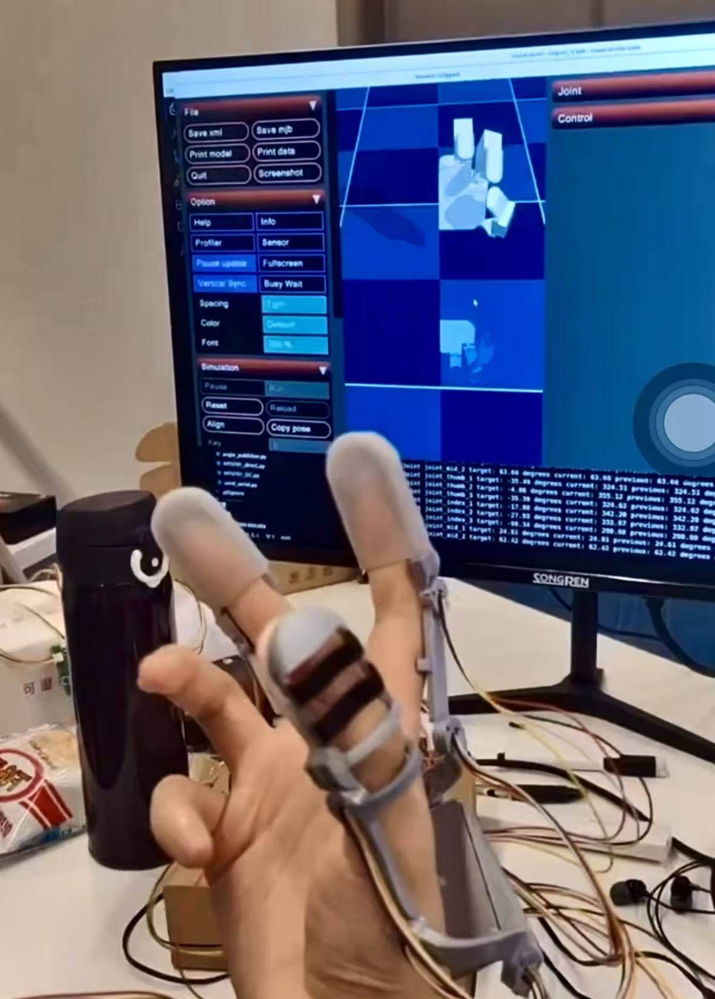
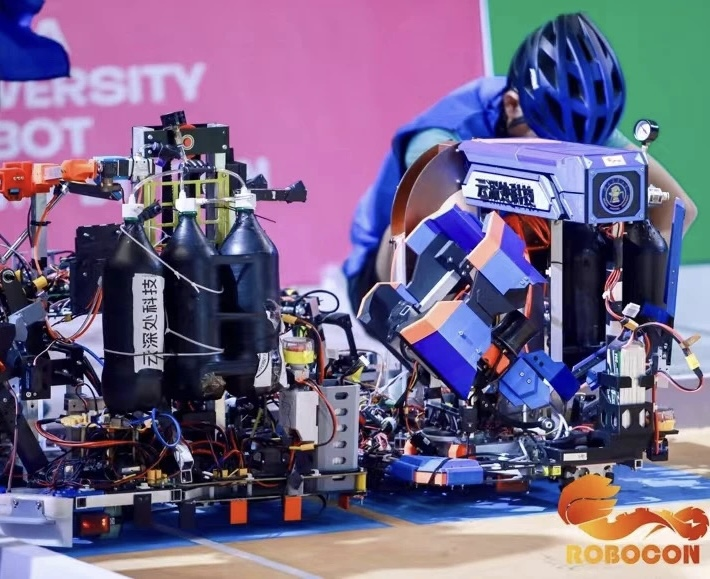
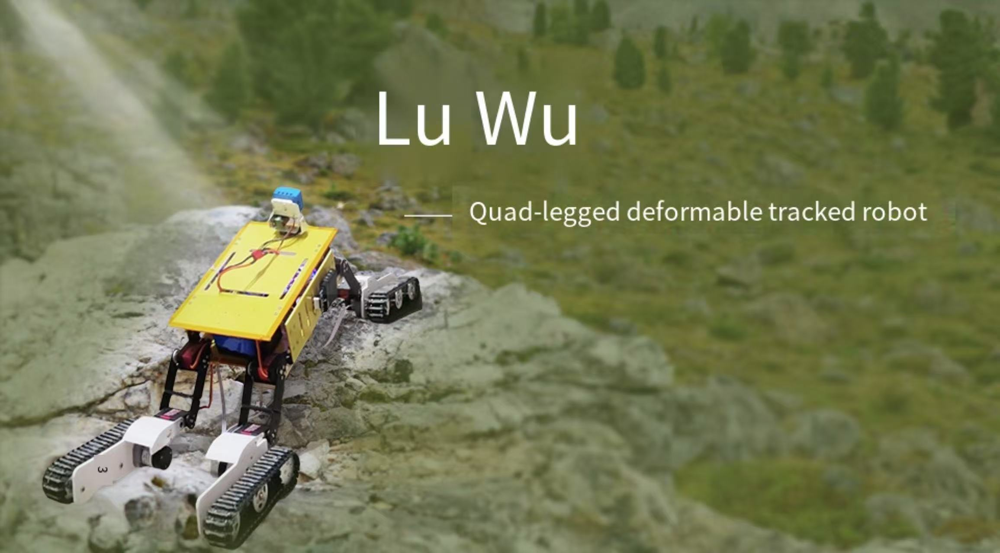
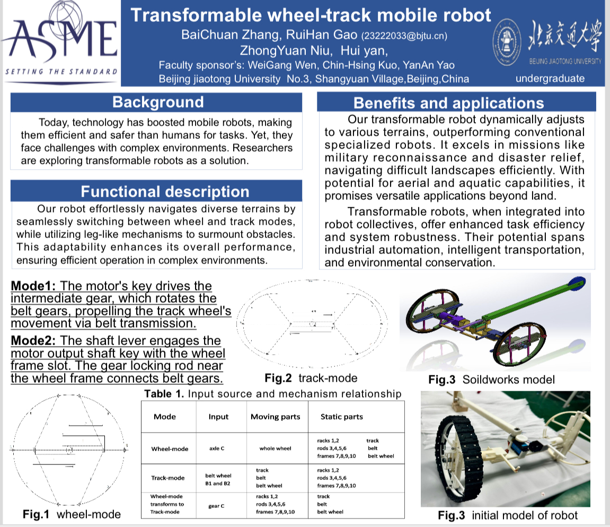
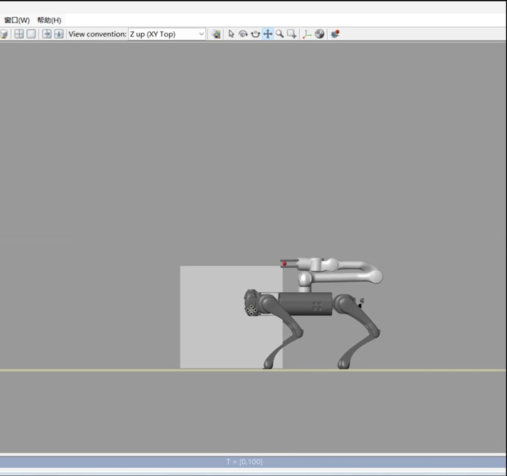

|
Ruihan Gao(高睿涵） I'm a bachelor's student at Purdue University. My research interests lie in robot design and robot learning. Before transferring to Purdue University, I was a student at Beijing Jiaotong University majoring in Mechatronic Engineering. |

|
ResearchI am passionate about robot structural design, My goal is to utilize sophisticated structures to enhance robotic performance. Additionally, I am interested in Embodied AI and expect to integrate machine learning into robot design in my future research. Herein I present some of my past projects. |
|

|
Wearable Exoskeleton Data Acquisition Device and Its End Three-Fingered Effector
The project is still under development, advised by Prof.Guyue Zhou at the Institute for AI Industry Research, Tsinghua University. |
|  |
CURC ROBOCON 2024 "Harvest Day"
Our team has developed a robot capable of picking up seedlings and shooting balls. It achieves precise grasping through a parallel four-finger gripper and enables accurate control of the ball's landing point via the simultaneous action of bidirectional friction wheels. |
|

|
Quadrupedal Transformable Tracked Robot
This project proposed a design transitioning from O-shaped wheels to an ∞-shaped caterpillar track, allowing the robot to carry payloads smoothly on flat surfaces and traverse obstacles on rough terrain. report / video; |
|

|
ASME Student Mechanism and Robot Design Competition 2024
This project proposed a design transitioning from O-shaped wheels to an ∞-shaped caterpillar track, allowing the robot to carry payloads smoothly on flat surfaces and traverse obstacles on rough terrain. report / video; |
|

|
Leg-Arm Coordination in Quadrupedal Robotics
This project proposed a design transitioning from O-shaped wheels to an ∞-shaped caterpillar track, allowing the robot to carry payloads smoothly on flat surfaces and traverse obstacles on rough terrain. report / |
Misc |
|
Designed and sourced code based on Jon Barron's website. |